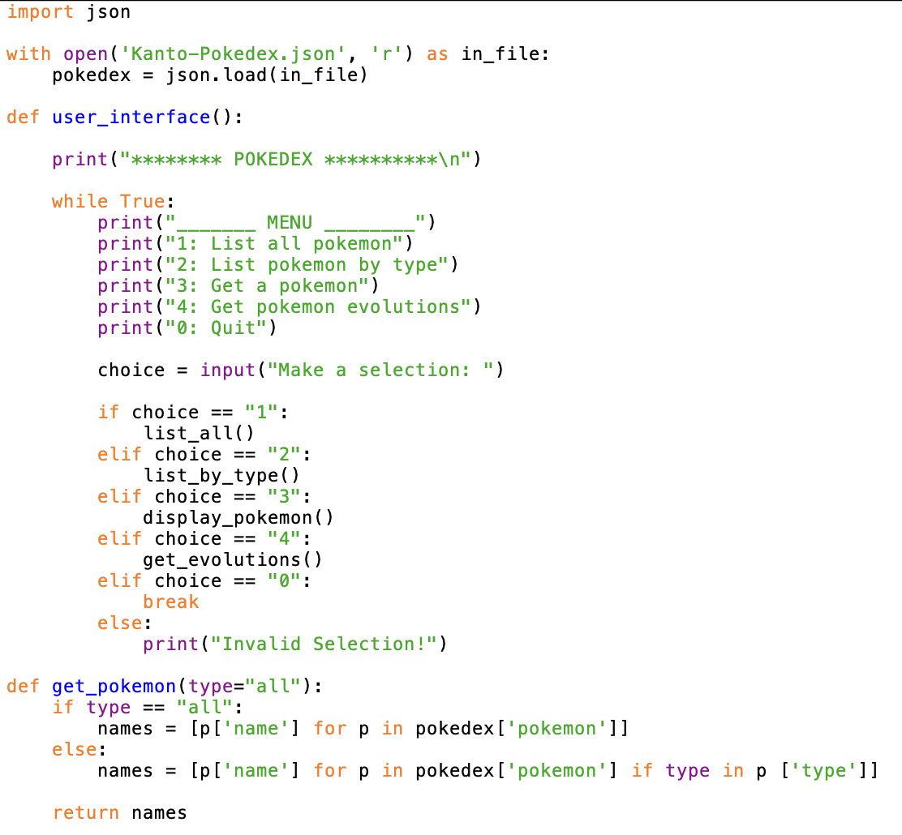

Developer Portfolio
This is the project you're currently viewing!
I made this to record any and all programming projects I make.
HTML | CSS | JavaScript
This is the project you're currently viewing!
I made this to record any and all programming projects I make.
HTML | CSS | JavaScript
This was a project I made for CS For Good 2025.
HTML | CSS | JavaScript

This was a project I made for a Website and Database Development class.
Python |


The project we chose to make for CS For Good is Fishers Student Exchange, an online marketplace for students within the city of Fishers to sell school supplies they no longer need to each other for a low price. This website can help students and parents save money on school supplies every year and encourage in-person interactions among students.
My job in this project was to work on the HTML and Javascript (or simply the functionality) of the website.
HTML | CSS | JavaScript